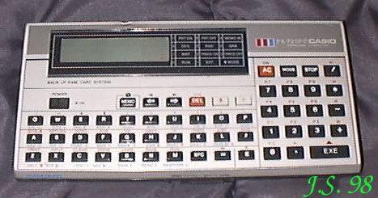

CASIOPewnego jesiennego dnia 1989r. pojechałem na giełdę komputerową w celu spieniężenia komputera C=+4. Nie było jednak chętnych na kupno za gotówkę. Trafił się jeden facet, który skłonny był zamienić swój, jak mówił, kalkulator, i trochę dopłacić. W ten prozaiczny sposób stałem się posiadaczem "kieszonkowca" Casio FX-720P. Początkowo działał, ale wkrótce wyczerpały się baterie. Po ich wymianie już nie chce działać :((. Jak na razie jest to jedyny komputer firmy Casio w mojej kolekcji...FX-720P Procesor ?RAM 4kB karta z podtrzymaniem bateryjnymROM ?Procesor graficzny ?Rozdzielczość maksymalna 32 x 120.Grafika niedostępnaWbudowany wyświetlacz LCDPorty: ?Zewnętrzne peryferia ?Dźwięk: wbudowany głośnik piezoelektryczny |